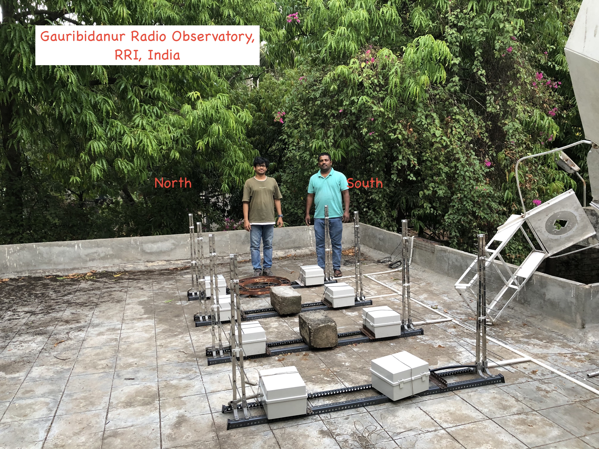

Instrumentation Experience
I have extensive hands-on experience in the observation, development, deployment, data processing, and scientific utilization of multi-wavelength astronomical instrumentation.
Optical and Infrared Observations
- Conducted photometric and spectroscopic observations using Indian national facilities, including the 2-m Himalayan Chandra Telescope (HCT), 3.6-m and 1.3-m Devasthal Optical Telescopes (DOT), and 1.2-m Mt. Abu Infrared Telescope.
- Experienced in observation planning, remote and on-site operation of optical CCDs and near-infrared (NIR) detectors, and development of custom data-reduction pipelines using IRAF and Python-based tools.
Millimeter and Submillimeter Observations/Technical Support
- Extensive experience with the Atacama Large Millimeter/submillimeter Array (ALMA), James Clerk Maxwell Telescope (JCMT), and Submillimeter Array (SMA) for high-resolution continuum and molecular-line imaging and spectroscopy.
- Proficient in CASA and CARTA for data calibration, imaging, visualization, and scientific analysis.
- Served for six semesters on the JCMT Time Allocation Committee (TAC) and contributed to technical activities associated with the JCMT submillimeter telescope.
JWST/MIRI and ALMA Data Analysis
- Developing custom Python pipelines for processing James Webb Space Telescope (JWST) Mid-Infrared Instrument (MIRI) spectral cubes, including continuum fitting, moment-map generation, and molecular-line identification. Developed peakmoment , a Python-based tool for spectral-line analysis, and applied these tools in Molecular Jets from an Evolved Protostar: Insights from JWST-ALMA Synergy (2025), ApJ, 991, 45. [DOI]
- Experienced in handling large survey datasets and integrating ALMA and JWST products for multi-scale analysis of the physical conditions and processes in star-forming regions.
Radio Instrumentation and BURSTT
- I was involved in the installation, commissioning, calibration, and scientific development of the Bustling Universe Radio Survey Telescope (BURSTT) , a distributed radio telescope designed primarily for the detection and precise localization of Fast Radio Bursts (FRBs).
- Experienced with installation, calibration, observation planning, data acquisition, and data processing for distributed radio telescope systems and VLBI-based observations.
- Led the development and operation of a BURSTT outrigger station at the Raman Research Institute (RRI), Bengaluru, India , as part of the international BURSTT collaboration.
- Involved in the development of data-processing workflows for radio transient detection and high-precision localization of Fast Radio Bursts.
- Collaborating with international researchers and engineers on the deployment, calibration, and scientific utilization of the BURSTT network.
Outrigger Station in India
There are several outrigger stations of the BURSTT projects as a part of VLBI observations Lin et al. 2022. I am involved in the installation, calibration and data processing of the telescope with out the BURSTT collaboration. I am particularly leading one BURSTT outrigger station at Raman Research Institute (RRI), Bangalore, India.

